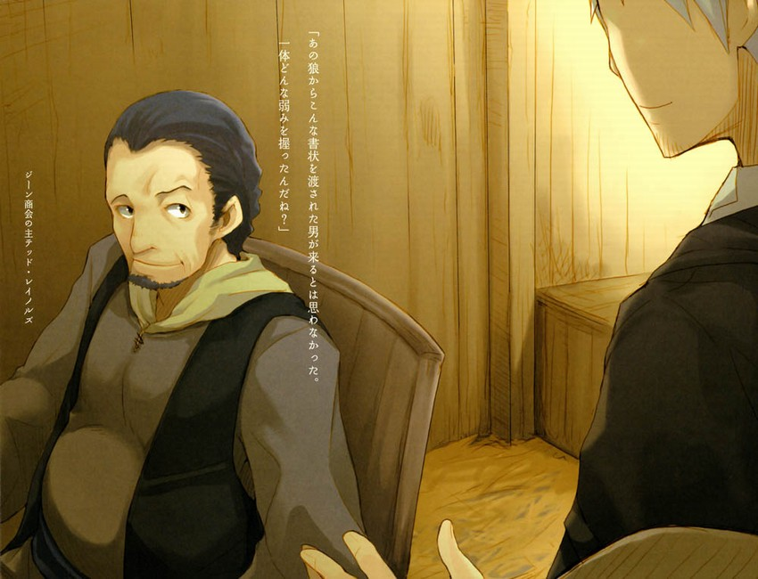

第二幕
羅埃弗河自羅埃弗群山注入羅姆河。羅姆河又注入溫菲爾海峽。
礦山之鎮李斯科在羅埃弗河最上游，雷諾斯位於羅埃弗河與羅姆河交匯處，而海邊則是港口城市肯盧貝。
位於這樣一條河流最下游的肯盧貝，從事由上游運輸來的銅製品的交易。既然是這樣的商會，那一定有相當的規模。
一行人抱著這樣先入為主的觀念以及某種臨戰的心情來到吉恩商會門口。
而讓他們吃驚的是——
「就這樣啊？」
赫蘿也露出了失望至極的神情。
「該不會被咱碰一下就會倒吧？」赫蘿的表情彷彿在這樣說。而實際上，她也正在想，只要惹咱不高興，就變回狼的樣子把這裡毀了。
刻著「吉恩商會」字樣的招牌掛在一塊長方形的鐵板上，朝向道路的地方是卸貨場，堆著各種貨品。
可是，運送貨物的並不是在任何風雪交加的深山都能前進的長毛馬，拉著的也並非在小村莊常用的可以裝下一切財產工具的馬車。
瘦小的騾子馱著作為冬天的飼料使用的稻草站在店前，在等待出發的這段時間裡無聊地打著呵欠。
一提到商會就聯想到金錢與權力的柯爾，在這蕭條的商會前露出了如臨大敵的表情。
「請問是哪位？」
卸貨場裡的賬房裡，一個略微發福的中年人正在寫東西，看到站在門口的羅倫斯等人之後，抬起了頭。商會裡除了這個男子以外沒有別人，只有放養的雞在啄食地上的谷粒。
「買東西的話我熱誠歡迎。不過，若是來推銷什麼的話……各位也許來錯地方了。」
男子沒有從椅子上站起來，他那有些鬆弛的面部擠出自嘲般的笑容，看樣子非常疲倦。
赫蘿對他這種態度相當不滿，於是朝羅倫斯看去。
這就是出於難以想像的目的、用金錢交易或許是自己同類的「狼之足骨」的吉恩商會。
赫蘿心情複雜。一方面，這是恨不得撲上去狠咬的對手；另一方面，她在想，有資格讓她產生如此恨意的商會，至少也應該是個強大的商會啊。
柯爾仍然把這個男子疲倦的神情誤認為是威嚴的表現。
不過，商會的規模與商會裡的人的能力並不總是成正比的。
雞窩裡也可能飛出金鳳凰，這樣的話他們聽說過許多次。
「這麼不景氣啊。」
羅倫斯說著，走進卸貨場。
也許是因為留著大量稻草，散落在地上的草會讓人以為這是鄉下的農家。儘管能表明這裡是商會的代表物品一應俱全，可還是沒有商會的樣子。
「嗯……咳，您是南方的商人吧，南方生意不錯啊。」
在角落上摞著許多武器。
看起來是賣不出去而滯留在庫的商品，對於曾經在有關武器的鬥爭中落敗的他而言，算是一點心理安慰。
「不算好，也不算糟糕。」
「這裡可是非常糟糕，簡直糟糕透了。」
男子說著，並舉起了雙手，彷彿已經認輸了。
赫蘿和柯爾跟著羅倫斯走進卸貨場，四處張望著。
突然，赫蘿用腳挑開地上的稻草，下面有兩個雞蛋。
「哦呀，這裡也有雞蛋啊。雞到處生蛋，找起來很麻煩呢。等會兒得撿起來。對了，今年這個地方雞的數量銳減，變得相當安靜。往年的這個時期到處都是公雞和母雞，非常吵呢。」
「北方大遠征中止了吧？」
「是的，沒人來就沒有收入，人不活動的話肚子就不會餓。農作物的價值下降，桶啊樽啊之類的加工品以及往年很熱銷的武器都賣不出去。現狀就是這樣，漲價的只有酒。」
「哦？」
赫蘿好奇地說道。
這個略微發福的男子在賬房的桌子對面聳了聳肩。
「沒事可做的時候不就只能喝酒嗎？」
赫蘿非常同意這句話。
「那麼，帶著兩個小鬼的商人，您給我帶來了什麼賺錢的機會嗎？」
「小鬼？」
赫蘿有些不滿地拉下頭巾說道。看來，她氣得無法保持平時的修女模樣了。
羅倫斯一邊想如果事先和她打個招呼就好了，一邊以平靜的表情示意她保持克制。
「我想拜見吉恩商會的主人。」
「就是在下了。」
由於早料到是這樣，羅倫斯點了點頭，並沒有露出特別驚訝的神情。他走上前，把艾普交給他的親筆信放到桌上。
「哦，恕我失禮了，您是勃蘭商會的熟人啊。」
「勃蘭商會？」
羅倫斯並不知道艾普經營著商會，所以現在感到有些意外。
他想，一匹狼這個稱號，沒有人比她更適合了。
不過，吉恩商會的人卻沒有對他的話表示驚訝。
而是輕描淡寫地說道。
「儘管是一個人獨力經營，甚至連招牌都沒掛起，但既然她能在到處布下情報網，應該可以算是很厲害的商會了吧？」
吉恩商會的主人一邊打開親筆信，一邊期待羅倫斯同意自己的說法。
儘管不知道艾普有多大影響力，不過羅倫斯認為，讓對方知道自己和艾普才認識不久，是沒什麼好處的。
羅倫斯曖昧地笑著點了點頭，而對方不知在想像著什麼，笑著說道：
「嗯……您是克拉福.羅倫斯先生吧。真想不到會有人拿著那匹狼給的書信到這裡來，您究竟被她抓住了什麼把柄？」
儘管男子看起來還是那副憨厚的模樣，他那翹起的左邊眉毛卻給人相當老到的感覺。
不過，他的表情既不是在恐嚇羅倫斯，也不是為了讓自己顯得更加威嚴，只是純粹地感到很有意思。他的表情，顯示出自己是個老成的商人。

羅倫斯也改變了對對方的看法，露出因遇到純粹地感到有意思的商人而欣喜的表情，並攤了攤手。
「這可不能說。」
「哈哈哈，是這樣啊……那麼，您有什麼事呢……」
說著，男子的視線移向信箋。
羅倫斯注意到他的臉變得有些僵硬。
由於上面寫的是關於神明和受到供奉的狼之骨的事。如果是正經的商人看到的話，一定會大笑著拿出葡萄酒來。
可是，吉恩商會的主人一邊若有所思地笑著，一邊用馬毛慎重地把親筆信重新封好。
「原來如此，很久沒人對此表現出興趣了。既然您是通過艾普.勃蘭的關係而專程來打聽這個的……就不是為了好玩吧。」
「麻煩您了。」
羅倫斯笑著回答之後，男子再次笑了，他的笑容混雜著兩種表情。
其一，竟然有商人專程跑來打聽這種荒唐事。其二，以前就算自己想告訴別人，也沒人願意聽，現在反而有人求自己說這個。
羅倫斯意識到後者，產生了一種奇怪的感覺。
不過，男子很快收斂了笑容。
「不過呢，為了聽這種玩笑而讓那頭狼寫下親筆信的男子一定是個厲害的男子。您帶來的兩個小鬼，仔細看看，也是不可小看的人啊。」
「我們並不是坐在參事會的席位上。先不管您怎麼看，更重要的是，能做什麼。」
「專程拜訪我的商會的商人克拉福.羅倫斯，我要的就是這句話。我還沒報上姓名。我是這商會的主人泰德.雷諾爾茲。」
這個名字是羅倫斯他們下羅姆河的途中，寫在信上的吉恩商會記賬人的名字。
光看名字，還以為是個年輕男子，而他的實際年齡是想像中的兩倍。
「吉恩是我父親的妻子的名字。他是個很愛妻子的人。」
「這實在是可敬。」
「冠以這個名字，讓別的生意夥伴都吃了一驚呢，所以啊，他也許是個妻管嚴吧。」
男子豎起一根指頭，像讓人感到不快的貴族一樣閉起一隻眼睛，笑著說道。
這種表情看上去既有些不適合他，又給人一種奇妙的親近感。
羅倫斯想，這可真是個不可大意的商人。
「找我問的事情，一定很奇怪吧。」
「是的，因為這個世界上總有人會做奇怪的事。」
「說的沒錯啊。唔。」
雷諾爾茲不耐煩地站起身，說了句「等等」之後，鑽進賬房裡面。
在他的身後，放養的雞咯咯叫著，並不斷地啄柯爾的草鞋上的毛邊。
柯爾拚命想把雞趕走。可是，雞卻對他毫不留情。
赫蘿饒有興致地看了一會柯爾和雞的戰爭，隨後對雞露出利牙。
不會飛行的雞跳著逃走了。
「站住……喂。」
倉皇逃離的雞撒了一地的細毛。這時，雷諾爾茲抱著個木箱從裡面出來了。
就算是遲鈍的商人也能輕易猜到發生了什麼。
「抱歉啊，不知為什麼我家的雞，對起毛的東西很感興趣。」
「現在這麼寒冷，總得把腳指頭遮起來吧。」
聽到羅倫斯的回答，雷諾爾茲大聲笑了起來。
「哈哈哈。我可真不敢想像。要是真的把腳指啄破的話，我只有把它連明天準備要生的蛋一起燉了賠禮了。」
柯爾摸著自己的腳指笑著，羅倫斯則看著雷諾爾茲放在桌上的箱子。
「這是？」
「沒錯，就是這個。」
男子立刻打開蓋子，看到裡面的東西，羅倫斯突然哆嗦了一下。
箱子裡裝滿了動物的骨頭。
「這些就是聽說我們以難以置信的高價求購大山深處寒村的神之骨這個傳言之後，願意幫忙的親切的人做出努力所得到的結晶。」
高傲而冗長的話語非常適合表現不耐煩的情緒，可是，這卻讓人弄不明白他是否在開玩笑。
不過，若想知道他是否在開玩笑，待會兒只要問赫蘿就可以了。
「這些，是真的？」
「是的話就好了。你也看到這間商會的情況了吧？我並不是被利益沖昏了頭腦才求購這些骨頭的，不過，這可把我這間店弄得就快倒閉了。」
這間店就快倒閉了，這絕對是謊話。這間店至少可以包攬羅姆河上游流入的銅製品的中轉生意，應該賺了不少錢。
可是，他那副無奈的樣子，卻不像是在撒謊。
男子的眼中露出純真孩子般的疑問之色。
「為什麼？現在還對這種無聊的傳聞感興趣？」
的確，就算被對方說是無聊的傳聞也沒辦法。
「艾普小姐也對我說了同樣的話。不過，這兩個人是北方出身的。」
「啊……」
雷諾爾茲睜大了眼睛。
他的表情，好像是覺得自己想錯了。
「原來如此，是這樣啊……嗯，我太輕率了。別往壞處想，我可不想讓你們的神明知道我對這種荒唐事的輕蔑態度。」
雷諾爾茲摸了一下鼻子，雙手攤開，像在教會對神明禱告般這樣說道。
這兩人是北方出身的，只要這麼一說，就一切都好理解了。這個地方離羅埃弗山很近。
羅倫斯也知道，雷諾爾茲非常尊重北方的人。
「既然這麼說，我也會盡力幫忙的。這種事其實相當荒唐。」
雷諾爾茲是個很擅長轉換氣氛的人。
他這樣說的時候，羅倫斯甚至產生了現在不是身處就快倒閉的商會的卸貨場，而是在參事會的議事廳的錯覺。
「羅埃弗的群山深處，流傳著許多教會不會放手不管的傳說；其中一些沒什麼可信度，另一些卻很難讓人懷疑。雖然不知道你們具體是哪兒出身的，但至少，聽說某村有狼神之骨的傳說，就應該知道指的是哪個村子吧？」
「是魯皮村吧？」
柯爾插嘴說道。
他的表情嚴肅，和剛才那個被雞啄得幾乎要哭的少年簡直判若兩人。
「沒錯。知道村名，並能追尋這件事來到這裡。看樣子你運氣很好，保住了小命；或者說，你是個看慣世間不合理的少年。」
柯爾說過，魯皮村被佩帶著劍的傳教士佔領，大多數人都被殺了。
聽完雷諾爾茲的話，柯爾握緊雙拳，用力點了點頭。
「旁邊那位小姐是北方出身，卻一身修女裝扮的原因，我也不想打聽。因為，商人儘管不能把金錢帶進墳墓，卻能把回憶帶進去。」
說著，雷諾爾茲露出嘲諷的笑容，表情也變得有些僵硬起來。
赫蘿也笑了笑。
因為她知道，想在進墳墓之前一直看到美麗純潔的事物的這種想法，只不過是可笑的願望。
「那麼，現在說說關於魯皮村神明的事吧。大約在前年夏天快結束的時候，傳教士和傭兵集團浩浩蕩蕩地朝北方的大山和平原進發。然後，某個村子發生了某些事，這並不稀奇。在那時，我和某個交往甚篤的商會知道了一件事，或者說，不得不知道。」
「是迪巴商會吧。」
如果讓對方知道來打聽事的自己什麼也不瞭解的話，對方也許會為了開玩笑或者隱藏什麼而撒謊。
所以，為了牽制他，要讓他認為自己並非一無所知。
雷諾爾茲覺察到羅倫斯的意圖，輕輕笑了。
「我不會對帶著勃蘭家那頭母狼的親筆信的商人說謊的。我尊敬那頭母狼，所以也會對那頭母狼信任的商人克拉福.羅倫斯先生表示敬意的。」
皮笑肉不笑的他，看起來好像在發火。
不過，羅倫斯知道自己沒有失言。
因為，這很類似兩名商人決定遊戲規則的儀式。
「抱歉，我插嘴了。」
「沒什麼，光是我一個人說的話，也許會不知不覺說一大通廢話。既然您不是什麼都不知道，我就說要點吧。」
雷諾爾茲咳嗽一聲，擺正了姿勢。
他的眼睛看著牆壁，眼睛的焦點集中在記憶裡。
「由於某些原因，強大而不可反抗的教會的某個派別找迪巴商會商量過這樣的事。我們去北方山中確認過的異教徒的傳說中，有一些和其它荒唐無稽的傳說不同，既有形、又有實。那麼，經營世上一切存在之物的各位，應該能把這有形之實找出來吧。」
這與其說是商量，倒不如說是命令。
他敢於這麼說，是出於對教會的反感吧。
「正如我們對煉金術師抱有難以理解的印象，認為怪異的他們無所不能一樣，覺得我們在做可疑而不道德的生意的教會也認為我們無所不能。而這種委託，也經常從上游傳達下來。」
「您所言極是。」
羅倫斯附和道。雷諾爾茲則滿意地點了點頭。
皇帝下達命令給宮廷商人，宮廷商人傳達給他所控制的商會，商會傳達給分店，分店的負責人傳達給市井商人。
甚至在恭敬地接受皇帝召見的時候所獻上的物品，都是分毫必爭的商人帶來的。
不過，命令是自上而下，貢品則自下而上，從來沒有反例。
「我們商會位於偉大的河之精靈羅姆治下的羅姆河下游。從上游漂下來的命令必須接受。這可真是——」
雷諾爾茲搖晃著頭，他臉上的贅肉彷彿就是為了今時今日而長的一樣。
「錢像水一樣往外流啊。」
羅倫斯點了點頭，把目光移向桌上的木箱中的那堆骨頭。
一般情況下，就算某個商會求購某種商品，也不會有這麼多商品送到商會裡。
這些大概是貓狗或者牛羊的骨頭吧，這間商會收集到這麼多的骨頭，也許是因為人人都知道吉恩商會在這個鎮上收集骨頭的行為並不是什麼正當生意。
如果是做正當生意，就不會用不對等的價格購買正當商品。
不過，既然不是正當生意，就可能用不對等的價格購買不正當的商品。
如果吉恩商會和它上面的迪巴商會收集的這些東西能讓下達命令的教會滿意的話，也許能得到金錢。
骨頭要多少有多少。
賭一下這種可能性也許是一次不錯的賭博。
有麻煩的，是設了這場賭局的吉恩商會。
「當時正準備舉行祭典。聽說找到真貨的話，他們會支付盧米歐尼金幣一千枚到兩千枚。」
「然後——」
雷諾爾茲自嘲般地笑著，柯爾接過話問道。
「然後，找到骨頭了嗎？」
雷諾爾茲的眼睛突然變得像白玻璃珠一樣，沒有了任何神色。
這種提問方式偏離了商人之間討論問題的規則，是無禮的發言。
不過，他那玻璃珠一般的眼睛又馬上變回了在賬房等待客人時無聊地看著雞啄食谷粒的眼神。
商人不會為無禮的發言而生氣。相對地，他們會採取相應的處理方法。
那就是——結束作為商人的談話。
「要是找到的話，我現在就坐在金桌子面前了。當然，當時謠言滿天飛，說我已經找到了骨頭，並大量儲存著，為此，我還多次受到威脅呢。可是，只要稍微想一下就明白了，誰有那麼大本事在不為人所知的情況下把如此大量的金幣交付給我呢。」
他之所以半開玩笑般地這樣說，是因為這件事確實荒唐。
假如把多達一千枚金幣的錢交給這間商會，只要是生意人，誰都會察覺到資金的流動。
這就像搬動大山，就算是在深夜悄悄進行，到次日早晨，也會人盡皆知。
這是根本瞞不住的。
柯爾似乎也隱約明白到這一點。
他非常遺憾地點了點頭，並對對方做出回答表示感謝。
這時，雷諾爾茲稍微睜大了眼睛，羅倫斯也笑了。
因為，雖然他提出了無禮的問題，但在提問之後很有禮貌地向對方表示了感謝，這是有些學徒就算挨鞭子抽也記不住的一件事。
儘管百無聊賴地坐在商會的賬房裡，雷諾爾茲作為商人的精明眼光仍是不容置疑的。
所以，他用商人的目光看著羅倫斯。
「看來，羅倫斯先生帶了個好學徒啊！」
他的眼神，猶如盯住獵物的鷹一般。
「他不是學徒。」
「什麼？」
雷諾爾茲感到難以置信，在他把目光轉向柯爾之時，羅倫斯又說道。
「他是未來的教會法學博士。要是把他當作商人的學徒的話，我死了以後可進不了天堂大門了。」
這個時候，雷諾爾茲的表情該怎麼形容呢。
可以這麼說，假如羅倫斯也能做出如此出乎赫蘿意料的表情的話，他肯定就能牽住赫蘿的韁繩了。
雷諾爾茲露出如此震驚的表情，隨後像認輸一般敲了敲自己的額頭。
「哦。北方出身，未來的教會法學博士，追尋著故鄉的神話傳說……原來如此，您不愧是得到那頭母狼信任的商人。您的旅程好像非常複雜，而且，也很讓人羨慕呢。」
在對人脈和權力網絡敏感的商人看來，未來的教會法學博士無疑是一枚金蛋。
只要是有眼光的人，都會捨得為其投資。
雷諾爾茲的眼神彷彿在這樣說。隨後，他把目光投向赫蘿，又投向羅倫斯。
「那麼，這位也是某個著名修道院的？」
他以鷹盯住獵物般的眼神看著柯爾的時候，赫蘿當然也察覺到了。不過，他在看赫蘿的時候，並沒有用那樣的目光。
也許是覺得自己無視赫蘿本人而向羅倫斯詢問的做法有些失禮，又或者只是隨意聊幾句。
赫蘿對他這種輕蔑的態度當然很不滿意。
那麼，要對方覺得自己的價值有多高，她才滿意呢。
在這方面的計算上，她不比商人慢。
赫蘿聽到雷諾爾茲的話之後，立刻躲到羅倫斯身後，緊緊抓住他的衣角。
她看起來就像是個怕生的少女，又像在強調自己的保護者是羅倫斯。
商人連神擁有的東西都想得到，別人擁有的東西就更想得到了，這可以說是商人的本能。
她這樣做非常有效果。
「哈哈哈。」
雷諾爾茲大笑起來。羅倫斯覺察到，赫蘿在自己身後露出壞笑。
這是無聲的兩重、甚至三重心理戰。
雷諾爾茲之所以大笑起來，是因為立刻意識到自己比輸了。
「真是了不起的客人啊。怎麼樣，馬上就到中午了，為了慶祝我們的相遇，一起吃頓飯吧。」
對羅倫斯而言，這個提議再好不過了。
與雷諾爾茲的對話充滿了刺激。
「感激不盡。」
「感到榮幸的是我。那麼，我馬上叫傭人準備。只是……」
雷諾爾茲把視線移向羅倫斯身後——吉恩商會的卸貨場，說道。
「按理說，為了慶祝，應該殺一隻雞。可是，今天一隻雞也沒有。」
「啊！」
柯爾大叫起來，赫蘿則把目光移向別處。
由於雞在啄柯爾的草鞋的時候，被赫蘿以狼看到都會夾著尾巴溜掉的視線嚇跑，所以現在卸貨場上一隻雞都沒有。
「不介意的話，麻煩把我的鄰居也叫來一起吃飯吧。」
看到柯爾和赫蘿追雞，雷諾爾茲像小孩子搞惡作劇一般笑著說道。
雞和葡萄酒。
如果說鹽和麵包是生存必需之物的話，這兩樣可以說是享受的必需之物。
當然，有人用這些美味招待自己就更好了。
還沒等雷諾爾茲說完「請別客氣」，赫蘿就把食物全部吃光了。而柯爾則很有未來教會法學博士風範，用教會的禮儀感謝款待。
不光和我們說狼之骨的事，還熱情地招待我們，真是個豪爽的人啊，柯爾這樣想。
席間，賓主寒暄著，羅倫斯知道了兩年前圍繞狼之骨惹出的騷亂以及之後的事。
但是，商人總是追求對等價值的。
羅倫斯對這種對等價值非常在意，不過，在臨別之際他才知道雷諾爾茲希望得的是什麼。
雷諾爾茲要求和他握手。
「請替我向艾普.勃蘭問好。」
雷諾爾茲用雙手握住羅倫斯的右手。他的眼神是商人的眼神。
他的意思應該是：請把我告訴你們狼之骨的事，以及把你們當作貴客招待的事對艾普說。
而他的目的，應該就是和艾普搞好關係，從而擴展自己的生意規模。
不過，儘管雷諾爾茲經營的吉恩商會並不起眼，卻絕對和掌捏著礦山利益和權利的迪巴商會關係緊密。
這樣的雷諾爾茲就算得到艾普的賞識，也應該得不到太大的利益。
難道說，艾普是個很了不得的人物？
儘管羅倫斯在意的地方有很多，受到的恩情卻不能不還。
羅倫斯答應了雷諾爾茲，離開了吉恩商會。
羅倫斯他們剛來的時候，雷諾爾茲連站起來打招呼都不願意，現在卻親自送他們到門口。
「那麼——」
羅倫斯說道。
目的輕易地達成了。
只是，在和雷諾爾茲的交談中，每個要點都讓他隱約感到不大對勁。
吉恩商會的店面是這樣，羅倫斯把艾普的親筆信交給雷諾爾茲時是這樣，以及，臨別之際雷諾爾茲的行動也是這樣。
儘管不是和狼之骨的事直接相關，但這個商人的行動總是充滿了出乎意料的地方。
羅倫斯摸著鬍子，靜靜思考了一會兒。
「那麼，要怎麼做？」
赫蘿的話打斷了羅倫斯的思考。
在看到赫蘿的臉的時候，羅倫斯想起了剛才用來招待他們的雞肉料理。
用來招待他們的美味，是將雞大腿煮過之後，撒上拌有浸過醋的香草和辣椒籽的醬油做成的逸品。
從赫蘿狼吞虎嚥的吃相和她嘴角留著的香草就可以知道，這是多麼美味的食物。
羅倫斯用手指把香草拿下，赫蘿有些不耐煩地閉起一隻眼睛。
不過，羅倫斯知道，她沒有因為自己被當成小孩子而生氣。
赫蘿把臉轉過去，對柯爾使了個眼色。
儘管有些吃驚，柯爾還是佩服地點了點頭。看到這裡，羅倫斯不禁歎了一口氣。
看來，赫蘿和柯爾打了賭，看羅倫斯會不會幫她把嘴角的香草拿掉。
「那麼……要怎麼做？」
理睬她的話就輸了。
羅倫斯裝作沒看到兩人使眼色，輕聲說道。
「聽到的比想像中要詳細，我有些吃驚。」
「嗯？」
「我原以為他會隱瞞很多事。」
聽到柯爾的話，羅倫斯輕輕把視線轉向赫蘿。
兩人的目光交匯在一起，又迅速移開了。
看樣子，赫蘿也對剛才談到的某些事很在意。
羅倫斯謹慎地說道。
「……是啊。教會那些傢伙相信魯皮村中的事是真的，這一點可以肯定。這麼看來，那些傢伙相信的某種東西一定存在。這就是一大進展。」
柯爾神情嚴肅地點了許多次頭。
不過，既然赫蘿也從雷諾爾茲的言行中看出不對勁，事情就沒那麼簡單。
之所以沒對柯爾說，是因為那樣可能會讓問題變得複雜。
柯爾是個直率的人。
雖然性格不像赫蘿那樣彆扭，但關於故鄉的話題仍舊是十分危險的內容。
還是找個時間慢慢和他說比較好。
「不過，有件事很遺憾。」
「？」
柯爾好奇地看著羅倫斯，歪著腦袋問道。
由於他表裡如一，他的表情反而看起來比赫蘿可愛得多。
「因為順利地打聽到了，所以就沒必要使出絕招了。」
「啊……是指銅製品吧？」
從河流上游運來時，銅製品裝在五十七個箱子裡，但經吉恩商會運到海上時，變成了六十個箱子，這是很奇怪的事。
羅倫斯懷疑這就是吉恩商會的一個弱點。
如果吉恩商會要刻意隱瞞狼之骨的事，應該會使出迷惑人的手段，柯爾也明白這個。
不過，由於箱子的數目不符合這個事實已經足夠讓人迷惑了，所以羅倫斯並沒有向柯爾問箱子數目不符合的原因。
當然，憑羅倫斯一人的能力是無法明白的。
算了，既然沒必要使用，在旅行結束後就當作謝禮告訴我吧。
明白了原因的柯爾點點頭，笑了。
「就是這樣，關於這件事，在去向艾普道謝的時候順便打聽更多的情報吧，我們只有這個選擇。不過話說回來，太心急的話也會出問題。被她覺察到什麼就不好了。」
「……啊……這個，要是認真地去追尋什麼，就會讓對手認為這種東西真的存在，是吧？」
他這種隨時都在學習的態度值得讚揚。
羅倫斯點了點頭。
「雷諾爾茲和艾普之所以告訴我們狼之骨的事，就是因為他們在反覆思考之後判斷出這些話無關緊要。假如這些話帶有那麼一丁點現實感，他們肯定會像貝殼一樣把嘴緊緊閉上。」
「如果我們過於認真地追尋這件事的話，那些人一定會懷疑我們是不是得到了足以判斷事情真偽的關鍵之物。」
讓羅倫斯他們相信狼之骨真實存在的關鍵不是別的，正是赫蘿。
理解了這個的柯爾豎起食指，就像廚師誇耀說這道菜的精妙之處就在於那一點香草一般，得意地說著。
或者說，像在主人面前得意地展示了剛學到的技能的小狗。
柯爾故意用得意洋洋的神情說這些話，這反倒不讓人覺得他很傲慢。
他生來就具有這種討人喜歡的性格。
「不過，正因為沒人相信，反而更容易打聽到。這麼說有些諷刺，本來就是想確認真偽才打聽這些的。」
「還有信仰的問題。要具有相信眾人皆醉我獨醒的勇氣。」
柯爾神情異樣地點了點頭。
「這可以說是靈活應用。當聖職者問神明是否會拯救世人這種問題時，得不到任何回答。這並不是神明懶惰，而是問題本身的原因？」
未來的教會法學博士用剛鑄造好的銅鐘般的聲音說道。
「只能解釋說，那是當然的。」
與和赫蘿談話不同，和柯爾談話讓羅倫斯感到安心。
他似乎明白了那些學者們日復一日重複著這樣的話題的理由。
兩人邊走邊談。不知不覺間，柯爾走到了羅倫斯的身邊。不過，這樣也不壞。
假如十年之後還能像這樣一起走，柯爾一定已經成為自己的一個優秀的朋友。
這樣一想，羅倫斯的心中產生了這樣的期待。
不過，有人插到了兩人中間。
這個人就是從剛才起一直被當成局外人的赫蘿。
「在咱面前談什麼談得這麼高興啊？」
她有些不悅。
羅倫斯不知道她的意思，不過，為了自身安全，還是不做分析為妙。
「既然有必要趕去那隻母狐狸那裡，咱也有個地方要去。」
「你說的是？」
聽到羅倫斯提問，赫蘿指著河口說道。
「就是那個熱鬧的地方。」
不用說，一定是三角洲上的市場。
她那藏在斗篷下的尾巴不停搖晃著，一定是在期待什麼好吃的東西。
與柯爾的知性對話，變回了簡單的對話。
隔著赫蘿的頭，羅倫斯把目光投向柯爾。
柯爾稍有猶豫地點了點頭。
赫蘿提到三角洲，有一半是為了自己，而另一半則一定是為了柯爾。
羅倫斯之所以難以從柯爾的知性對話和赫蘿的簡單的話語中分出優劣，是因為赫蘿的話語中總是隱藏著某種深層含義。
所以，羅倫斯也似有隱藏地回答了赫蘿。
「你就想著吃。」
羅倫斯說完，赫蘿那琥珀色的眼珠滴溜直轉。隨後，她噘起嘴輕聲笑道。
「咱可總是想著汝的啊。」
赫蘿稍微提高音量，用撒嬌般的語氣說完，抱住了羅倫斯的手臂。
旁邊的柯爾面紅耳赤，不知道該看什麼地方才好。
羅倫斯產生了一種優越感，卻沒有直率地表現出來。
因為，赫蘿這樣做，一定會要求回報。
「因為我是你的食物嘛。」
羅倫斯以這樣回答作為回報之後，赫蘿滿意地笑了，她那藏在斗篷裡的耳朵不斷搖動著。
「那麼，就稍微鬆一下錢包吧？」
羅倫斯把目光投向柯爾。
他的目光彷彿在問，你怎麼看？
「看來，她是想說謝謝請客吧。」
「真是的，我還打算買點餐後酒喝呢。」
看到柯爾都不幫自己，羅倫斯只好悻悻地這樣說道。
肯盧貝鎮所在的三角洲中心地帶有個很大的蓄水池。
裡面有各種大大小小的魚，也經常能看到烏龜和水鳥群。
不過，在水邊的人並不是有著一頭金色卷髮的詩人，交流的話語也不是用超越世俗的語法編織的詩句。
水邊充滿了單刀直入的數字和砍價聲。說出這些話語的喉嚨很粗，抓魚的手臂也非常壯。
市場裡的人都把這個蓄水池叫做金之泉。
建立在這三角洲上的肯盧貝市場的寬度為距蓄水池往北兩百步，朝南兩百步，長度為向東三百步，朝西四百步。
市場的規模是很久以前就決定好的，而且在三角洲上還有足夠的空間擴大市場規模。不過，至少在羅倫斯的所見所聞中，沒有發生過擴大市場的事。
這麼看來，建造建築物是以節約土地為原則。
建築一家挨著一家，商戶們甚至諷刺地說，密集到連隔壁的賬本都能看得一清二楚。
羅倫斯他們剛上三角洲，赫蘿就摀住了耳朵。
就算那些話是開玩笑，赫蘿的行為也絕不是在演戲。
肯盧貝港口城市最大的市場總是熱鬧得讓人難以置信。
「今天是不是在舉行什麼慶典？」
羅倫斯向船家付了錢之後，從棧橋走上三角洲。先上了三角洲的柯爾吃驚地問身邊的赫蘿。
三角洲上有三處乘船地點，羅倫斯他們下船的地方是往來於城市北側的船隻停泊地點。因此看到了三角洲市場的著名物品，代替以觸礁的船建造的門，卸下後就一直堆放著的切割好的石材。
市場就在前面，人們摩肩接踵，卻沒人好好看著前方走路。大家都一邊看著各家店，一邊行走。
「哦？這麼多人倒是常見的光景。咱還到過一些地方，整個鎮子都像這樣。」
赫蘿露出司空見慣的表情，說完後，挺起了看起來比柯爾大不了多少的胸。
「是，是嗎？熱鬧的城鎮我只知道阿肯特……」
「唔，也沒什麼，年輕人嘛，不知道的事總比知道的多，慢慢學習就好了。」
「說的沒錯。畢竟，你第一次和我去河流沿岸的港口城市的時候，也和我說過同樣的話啊。」
羅倫斯從赫蘿身後把手放到她頭上，這樣說道。
赫蘿在帕斯羅村的幾百年時間裡，世界發生了巨大的變化，甚至連神明都變得衰老了。說到不知世事，恐怕赫蘿更嚴重。
不過，兩人想炫耀自己見多識廣的心情是一樣的。
赫蘿把羅倫斯放在她頭上的手撥開，生氣地瞪著他說道：
「汝真是個心胸狹窄的人。就這麼喜歡表現得比咱見多識廣啊？」
「這句話我原封不動地還給你。你去過的大都市最多也就是留賓海根吧。」
赫蘿漲紅了臉。
柯爾不安地看著兩人，不過，赫蘿那種「讓咱去玩」的表情明顯地寫在臉上。
「怎麼說，汝都是個連食物都要省著吃的行商者嘛。咱是被囚之身，無法遊歷各地。這麼說，汝肯帶咱去各地轉轉？」
這句話含義豐富而含蓄，彷彿之前的旅行都是試驗，弄錯一步的話，自己就會被羅倫斯一腳踢走一樣。
柯爾不知道哪句是玩笑，哪句是認真的，他掩飾不住不安的心情。
當然，羅倫斯和赫蘿只把柯爾當作觀眾，他們依舊站在自己的舞台上。
所以，羅倫斯懇切地回答道。
「商人用金錢解決一切。如果不用花錢的話，我什麼都可以幫你做。」
「比如，在什麼情況下？」
赫蘿難得地用斗篷半遮住臉笑了。
「比如說？這個啊……」
羅倫斯的大腦思考著，赫蘿敲了敲焦急的他，揪著他的衣服把他拉到身邊。
「那麼，讓咱聽聽汝的枕邊密語吧。汝該不會讓咱這麼說吧？」
你不都說了嗎？羅倫斯心裡這樣想著，嘴上卻沒說。
本以為兩人在吵架，沒想到方向突然變了。柯爾紅著臉，一邊嚥著唾沫，一邊看著兩人打情罵俏。
羅倫斯想，當演員也不錯。
「枕邊密語的話，的確不用花錢。不過，每次把你抱到床上的時候，你都喝得爛醉。」
赫蘿突然從羅倫斯身邊跳開，臉上浮現出狡黠的笑意。
羅倫斯很清楚她要說什麼。
所以，他做好了心理準備，並露出無奈的神情。
「有什麼辦法？汝說的話乾巴巴的，一點趣味也沒有。」
在這種日常對話中也能毫不羞怯地展現出自己的演技，羅倫斯的成長確實值得表揚。
「那麼，趕快去各處看看吧。」
也許是因為玩笑開夠了，赫蘿舔著舌頭這樣說道。
要去看的不是市場的情況，而是市場上的食物。
剛剛才吃了雞，她的肚子現在就餓了。
「這個城市有什麼著名小吃呢？」
儘管柯爾被他們那變化極快而又虛實混雜的對話弄得頭暈。但還是善解人意地對赫蘿這樣說道。
「聽起來怎麼感覺想吃東西的只有咱啊？」
「啊？我、我不是這個意思……」
赫蘿狡黠地笑著，拿柯爾尋開心。她斗篷的裙角翹了起來，看來，她的尾巴一定在興奮地搖晃。畢竟，被赫蘿戲弄的柯爾已經窘得說不出話來。
赫蘿一個人走在前面，跨過代替門的石材之後回頭說道。
「快！」
儘管市場非常喧鬧，但人們還是會被清亮的少女的聲音吸引。
坐在石材上寫東西的商人把目光投向赫蘿，他那放在石盤上的手立刻變得不知所措了。這個商人看起來身材清瘦，一副禁慾主義者的樣子。不過，赫蘿一眼就能看出，他只是為了攢錢而節制自己的慾望，所以離斷絕一切慾念的隱者還差了十萬八千里。
這個商人隨著赫蘿的視線望去，當看到羅倫斯時，那目光中包含的明顯不是善意。
商人馬上便裝出若無其事的樣子，把目光移回手邊的石盤，繼續寫東西。不過，羅倫斯很清楚，他的視線正從石盤移開偷偷瞄向赫蘿。羅倫斯不禁苦笑起來。
「發什麼呆！還不快來——」
不知是因為察覺了到投在自己身上的視線還是什麼，翹起藏在斗篷下的尾巴大叫著催促羅倫斯的赫蘿突然閉上了嘴。
「？」
就算赫蘿的演技再高明，經常看到的話也能大致分清楚她是不是在演戲。
這次看起來可不是在演戲，羅倫斯像剛才那個年輕商人一樣，隨著赫蘿的目光看去。
他們看到了。
柯爾也回過頭，卻馬上摀住了自己的嘴，他明白兩人看到了什麼。
赫蘿看到的，是剛下船的，他們非常熟悉的商人。
「嗯？哦呀……」
此人的裝束和平時一樣，從她那好像沒睡醒般半閉的眼睛中，投射出充滿自信的視線，彷彿在宣告自己能用金錢買下世上的一切似的。
不過，她那有些吃驚的表情不是在演戲，看來是真的覺得驚訝。
因為，艾普的身邊跟著兩名打扮得體、容姿端正的男子，還有兩名打扮得體，長相卻很兇惡的男子。所以，他們的相遇是偶然的。
坐在石頭上考慮著生意上的事的年輕商人看到艾普之後，慌忙站起來，逃也似地小跑進市場裡。
無聊地坐在裝著魚的籠子邊等待收購者的老年漁夫像在海上遇到精靈一樣，恭敬地低下頭。
艾普身邊的男子似乎覺得年輕的商人和漁夫的舉動是理所當然的，羅倫斯反而是奇怪的傢伙，於是毫不客氣地瞪著羅倫斯，並品頭論足。
隨後，他們似乎做出了羅倫斯是不值一提的小人物的判斷，用鼻子哼了一聲。
接著，他們回頭看著艾普，彷彿在問，這小子是怎麼回事？
「還以為你們去了南方……看來還是以觀光為優先啊。」
四名男子中最年輕的一個付了船資。
艾普根本不看他們一眼，而是開心地和羅倫斯打招呼。
要說她看了什麼，那就是以充滿敵意的目光掃了赫蘿一眼。
她身邊的男子們一邊看著羅倫斯，一邊交頭接耳。
「是的，暫時休業。而且，傷口還隱隱作痛。」
由於強烈地感受到赫蘿從身後投來的視線，羅倫斯的話語中混雜著某種挖苦的情緒。
艾普一定明白自己在說什麼吧。
她稍微瞇起眼睛，並輕輕舉起右手，對手下的兩三個男子做出指示。
於是，兩名容姿端正的男子露出皮笑肉不笑的笑容，兩名長相兇惡的男子則像根本沒看到羅倫斯一樣，從他身邊走過，走進市場中。
他們所走過的地方，人流都朝左右分開，簡直像聖經中的傳說一樣。
他們大概是這個城市中有頭有臉的人物吧。
這時，赫蘿走了過來，就像故意錯開那兩名男子似的。
「我都說了還在休養，可還是被叫出來了。那些傢伙是肯盧貝北邊的有實力的人物啊。」
「是商人嗎？」
羅倫斯問道。艾普立刻搖了搖頭。
「他們並不從事物品交易。不過，在算賬方面倒是好手中的好手。」
艾普的眼中閃現一絲厭惡的神色，羅倫斯立刻明白了他們的身份。他們是在這個城市中擁有特權的人。
要麼擁有土地，要麼擁有漁業權、關稅徵收權等權力。至少可以肯定，他們是只要坐在椅子上指手劃腳就來錢的人。
他們在艾普面前表現得很恭敬，也許是因為明白艾普有利用價值吧。
又或者，是因為他們有實力，卻沒有貴族頭銜。
儘管不太清楚原因，羅倫斯卻覺得很有意思。
「在意的話就來金之泉吧。那麼，失陪了。」
艾普離開時，朝赫蘿輕輕一瞥。
隨後，她的身影馬上消失在市場的人海中。
彷彿想不想在人群中顯得惹人注目都依她的心情而定。
羅倫斯略帶佩服地目送她離開，被赫蘿踢了一腳之後才回過神來。
「竟然當著咱的面看其它雌性，汝膽子實在不小。」
這句話雖然很耳熟，但羅倫斯沒有正面回答，只是攤了攤手。
「那麼，要我從今往後都只看你一個嗎？」
羅倫斯反問，並開玩笑般地把臉湊近赫蘿，結果被赫蘿毫不留情地扇了一巴掌。
隨後，赫蘿紅著臉獨自走進市場。
「啊，赫蘿小姐！」
柯爾條件反射般地想跟在赫蘿後面，但馬上又停住了腳步。
然後，他猶豫地轉過頭說道。
「那、那個……」
「嗯？」
「不去嗎？」
跟著赫蘿是當然的。
柯爾之所以停下腳步，是因為他知道該這麼做的是羅倫斯，而不是自己。
「我不去。因為，赫蘿想叫你去。」
「這種事……」
「怎麼可能，是嗎？」
羅倫斯說完，輕輕地撓柯爾的頭。
在他停手之後，柯爾並沒有重新整理自己那變得亂蓬蓬的頭髮。
大概是因為忙於思考，沒這個工夫吧。
「我承認，你的頭腦很好。但是，只要稍微想想剛才的對話，就該知道沒我出場的份了吧。」
羅倫斯笑著，幫柯爾整理好頭髮。
「那傢伙是真的生氣。不過，和我吵架卻是假的。」
羅倫斯拿起掛在腰間的皮袋，取出一枚崔尼銀幣。
他把銀幣按到柯爾的鼻尖上，說道。
「拿著這個的話，應該夠你們大吃大喝了。不過，千萬要幫我留意，別讓赫蘿喝得太多。」
「……」
不明白羅倫斯為什麼不追趕赫蘿的柯爾接過銀幣，露出疑惑的表情。
「那傢伙早看穿我的心思了。我的心已經被艾普說的那番話勾住了。不過，那傢伙很討厭艾普，不想看見她。」
柯爾疑惑地看著羅倫斯，似乎想問「然後呢？」但是，羅倫斯沒有繼續解釋，而是推著他的背，催他離開。
並說了一句，想知道的話，就去問赫蘿好了。
柯爾猶豫了一會兒。不過，他畢竟是個頭腦聰明的少年，還是按羅倫斯的吩咐離開了。
即使在茫茫人海中，赫蘿還是能找到柯爾。
「接下來——」
艾普說過，到金之泉就明白了。
羅倫斯知道這句話的意思。
在肯盧貝港口城市有個慣例，凡是與城市有關的重要話題，都要去三角洲的金之泉邊商討。
在城市北邊舉行會議的話，就會對北邊的人有利，反過來說，南邊也一樣，所以，這也是保持均衡的措施。
既然城市裡的有實力者和身為沒落貴族、將來有望成為巨商的女人來到這樣的地方，那麼，所有頂著「商人」這個稱號的人都想來吧。
不管在他們面前使什麼手段，都敵不過他們。
當然，以赫蘿的能力，讓羅倫斯朝自己這邊來是輕而易舉的。不過，賢狼明白這樣做的代價。
與其這麼做，還不如抽身而退，找羅倫斯索要點什麼。
羅倫斯答應了這種交易。
他之所以無力地抓著自己的劉海，是因為在自嘲。既然是這樣的交易，自己也輕易地讀出赫蘿的心思了。
赫蘿也一定感到很意外。
「參觀費原來是一枚崔尼銀幣啊。」
赫蘿抱著手，歪著腦袋，她在反思自己是不是走得太快了。
不過，她並沒有抱怨。
羅倫斯邁出步伐，推開人群走進市場中。
他覺得，自己也巧妙地融進了市場裡。
留在身後的，是如蟻群般騷動的市場和喧鬧人群。
市場內是另一個世界。
不知是真是假，這個在三角洲上的市場，據說是建立在深深釘入砂中的無數鋼筋上的。
為了避免建在鋼筋上的市場被河水沖走，建築物大多為石造。如果用木材建造的話，用不了多長時間，釘子就會生銹而變得脆弱，所以，這一點是很容易理解的，只不過，羅倫斯有些擔心建在砂上的石質建築會不會沉下去。
當然，從來沒聽說發生過這樣的事，所以應該沒問題的吧。
另外，由於這種情況，被風吹來的砂堆積在各個石質建築之間的空隙裡，市場的風貌讓人聯想起遙遠南方的沙漠之國。
羅倫斯在這人們操著各種口音的市場中前進著，順利地到達了金之泉。
泉的周圍是一片圓形的廣場，四條道路各自從東南西北方朝泉的方向延伸。
泉的正中央立著一根很長的鐵柱。
在這根黑色的、像變魔術一樣掛著三條鹹魚的柱子上，立著一隻海鳥。
泉邊的一角有三套桌椅，在其附近站著三名士兵。他們身穿皮製胸甲，手執幾乎超過身高兩倍的長矛。
朝四周看看，會發現圍泉所建的旅館二樓毫無例外地敞開著窗戶。從窗戶探出頭的基本上都是裝束華麗的商人，其中也有身邊站著侍女的人。看來，他們都在看熱鬧。
羅倫斯可沒工夫悠閒地從窗口觀戰。他從露天攤販那裡買了啤酒，站到足以聽到坐在桌邊的人對話的地點。
儘管還沒看到艾普，但已經有幾個一看就是相關人士的人坐在椅子上了，他們各自與同一陣營的人交頭接耳。
這次的議題是什麼呢，這根本毋須專門找人打聽。
因為，沒人比正在看熱鬧的商人口風更松。
對賺錢的事口風相當緊的商人在議論傳聞的時候也會說漏嘴。只要豎起耳朵聽，就足以明白身邊那些舉著烈性蒸餾酒大聲說話的商人在談論什麼。
他們也許是乘船旅行的途中順道來此的商人，由於喝得爛醉，一個個都變得口齒不清。不過羅倫斯大致能聽出，他們在議論是否擴張三角洲上的市場的事。
以前來這裡的時候，羅倫斯也聽說過這樣的事，也許這件事已經討論過無數次了。
不過，簡單地思考一下，在三角洲上擴張市場的話，相應地，商人和商品往來會增多，也能增加城市的稅收，應該用不著專門討論就能達成一致意見。
當然，事情不可能那麼簡單。所以商人們應該會經常提出建議，但基本上所有的建議都會與當權者的利益相牴觸。
羅倫斯喝著啤酒，略帶不屑地看著已坐到桌邊的人，心想，這次又會上演一場怎樣的利益鬥爭好戲呢。
這時，他的視線突然被某種東西吸引住了，那是剛才停在鐵柱上的海鳥，它剛剛展翅飛起。
在它飛起之後，又或者是之前，洪亮的鐘聲響徹整個市場，吵鬧的人聲如退潮般安靜了下來。
羅倫斯朝泉邊的桌子望去，參加討論者都站起來了。他們把伸出的右手重合在一起，宣佈會議開始。
「以偉大的河之精靈羅姆的名義！」
接著，他們各自坐下，三名士兵把長槍朝天空揮舞。
這種開場很像古代帝國的賢者會議舉行之前進行的儀式。不過，為了讓會議具有權威性，這是必要的。
從這也可以推測出，在過去，會議的權威大概曾多次受到貶低。
如果作為城鎮決策機關的會議沒有權威，城鎮立刻就會陷入紛爭狀態——這和沒有指揮官的傭兵集團一樣。
當然，治理國家也是一樣的。因此，國王要宣稱王權是神明授予的。
羅倫斯喝著啤酒，嘲諷地笑著發出「哪裡都一樣麻煩啊」的感歎。
「你果然這麼想啊？」
自言自語的時候突然有人搭腔，羅倫斯差點把啤酒噴出來。
他慌忙循聲望去，那是沒有在會議現場出現的艾普。
「這麼慌張，有什麼事瞞著我嗎？」
她那纏在頭上的布之下的眼睛露出微微笑意。
「……商人總是把秘密和金錢裝在錢包裡的。」
「可以的話，甚至想帶進墳墓裡，是吧？」
「說的沒錯。」
羅倫斯誇張地聳了聳肩，艾普則像個城裡姑娘一樣開朗地笑了。
「找我這樣的市井商人，有何貴幹嗎？」
「我不是說了嗎？我這輩子都不會忘記被你掐住脖子的事。」
聽到她這樣說，羅倫斯也很難堪。
不過，再偉大的將軍，小時候也一定有過和人打架被打哭的經歷。
「我還以為你是坐在那邊椅子上的人呢。」
「那種儀式？在那種地方能有什麼收穫，還不如向那些叫什麼神明的傢伙祈禱呢。」
說著，艾普瞇起眼睛朝泉邊望去。
羅倫斯盯著艾普的側臉，卻猜不透她的真意。
不知道多說話會讓她的心情變好還是變差。
假如她是和赫蘿一樣的狼的話，大概是後者吧。
泉邊傳來很大的咳嗽聲，接著，就是公式化的議題宣言。
「會議開始了。」
和在旁邊邊喝蒸餾酒邊談話的商人們說的一樣，宣言的內容和三角洲上的市場擴張問題有關。
發表宣言的是和艾普一起乘船來的打扮得體的男子。看起來，他早已習慣在眾人面前發表演說。
「雖然還不至於說是鬧劇，但你不覺得會議的結論都是從會場以外的地方得來的嗎？」
聽了艾普的話，羅倫斯稍微遲疑了一下才做出回答。因為他的思維被一種類似嫉妒的情緒妨礙了。
「……這麼說，艾普小姐是負責檯面下的應酬咯。」
不知是不是察覺了羅倫斯的情緒。
艾普聳了聳肩，歎著氣說道。
「你就老實說你想說什麼吧。」
「原本負責檯面下應酬的艾普小姐現在卻在我這邊浪費時間，其中的原因我很在意啊。」
說完，羅倫斯覺得自己的語氣裡是不是夾雜了過多的嫉妒情緒，但轉念一想，自己的這點情緒也是情有可原的。
因為，得到某個城鎮中有實力者的信賴，對毫無根基的行商者而言，毫無疑問是莫大的榮幸。
不過，聽了羅倫斯的話，艾普怔了一下。
有這麼讓人吃驚嗎？——正當羅倫斯這樣想過的時候，艾普再次把視線移向會場。
這時，看起來像南北雙方的代表正在論戰。不過，看不出他們有什麼霸氣，反倒有一些傻氣的感覺。
羅倫斯將目光移回的時候，艾普也幾乎在同時做了相同的動作。
艾普臉上露出看柯爾時的表情和笑容。
羅倫斯剛剛這麼認為，卻又轉念一想，覺得還是有所不同。
應該說，她現在的表情，和在毛皮與木材之鎮雷諾斯以命相搏時，露出的表情一樣。
「你能坦率地流露出心中的彆扭情緒，我很高興。我如果這麼說，你會笑嗎？」
羅倫斯明白艾普一直盯著會場的原因了。
被稱為狼的傢伙，沒一個坦率的。
「是的，我會大笑。」
商人和商人之間總是相互隱藏真意，為了得到各自的利益而披上各種外皮。
如果依著這種本能，羅倫斯討好艾普，求她讓自己加入檯面下的應酬也是正當的行為。所以說，自己只是鬧鬧彆扭根本無可厚非，而將這種情緒表露出來也完全無傷大雅。
話雖這樣說，但所謂「商人的朋友只有商人」。如果是這樣，那就意味著一個以獲得利益為最大目標的商人身邊全都是些隱藏了真正想法，想要盡力討好自己的人。
而且，就算是傳說中的勇者，也有需要休息的時候。
所以，羅倫斯不動聲色地表現出對艾普的嫉妒，這頭狼反而覺得很高興。
艾普自嘲般地低下頭，當她再次抬起頭時，她的眼睛如被剛融化的雪水洗過般清澈。
「看到你，並且和你打招呼，看來是正確的。說實話，剛才被那裡的人叫住說話真是讓人鬱悶得不行。」
艾普不耐煩地指著會場說道。
「是因為無利可圖？」
羅倫斯說完，艾普撇了撇嘴，這個動作明顯到即使她的頭上纏著布也能被羅倫斯看出來。
接著，她一把奪過羅倫斯的啤酒。
「不過，對於之前在雷諾斯和羅姆河玩火的我來說，這也是我來到這個城市就會感到安心的理由之一吧。」
她有政治上的保護者，或者說，得到了擁有凌駕於地方領主的逮捕權之上的財力的投資者的幫助。
不管是哪種情況，自己和艾普的立場都是不平等的。
以獨行天下為傲的旅行商人中，也有這樣一類人。
這個雖然沒落了、卻仍有貴族頭銜，並從谷底爬起來的艾普，一定有著許多旁人無法看到的保護傘。
在市場門口相遇時，他們對艾普表示尊敬。但從艾普的神情看，事情並沒有那麼簡單。
「我就像他們的保鏢一樣，接受荒唐無稽的命令。你知道這個市場建立的過程嗎？」
聽到艾普說出這句話之後，羅倫斯誠實地搖了搖頭。
「幾十年前，建立這個市場的時候，提出建議的是希望擁有能夠與北方貿易的據點的南方商人。當然，商人們向地主提出希望買下三角洲，在那裡建立市場。不過，有些缺乏智慧的地主們認為賣掉土地是大損失，於是提議自己建立市場。為此，甚至欠下巨款。」
「地主是北邊的人，而借出金錢的是南邊的人。」
艾普稍微整理了一下纏在頭上的布，喝了兩口啤酒，然後將酒瓶還給羅倫斯。
「沒錯。現在在那裡的人就是借款者和貸款者的兒子們。借了錢的地主保住了土地，每年得到巨額的土地使用費，但也必須付出數額同樣巨額的利息。於是，對此不滿的地主們拚命尋找解決之道。」
「可是，他們沒找到。」

艾普點了點頭。她的目光變得冷酷，彷彿連人命都可以用金錢衡量一般。
「那麼，第二代又接著在尋找什麼呢？答案很簡單，替死鬼。」
「把難題推卸出去，是嗎？」
艾普的表情變得如湖水般平靜。
艾普的確有能力成為巨商，但現在，她只不過是個有點小錢的商人。
不是利用者，而是被利用者。
艾普受命解決這個誰都明白無望解決的南部與北部市場的問題。
而且命令她解決問題的人所期待的，不是解決問題，而是無法解決之後的責罰。目的是為了找個可憐的替罪羊發洩。
作為輸給艾普的人，羅倫斯希望比自己強的人至少是個世界的霸者。
「啊啊，給別人帶來不幸不就是我的專長吧。你在雷諾斯也已經見識過了吧。」
艾普平靜地說道。艾普的強大與羅倫斯是不同的，這是因為兩人所處的世界不同。
「是的……意外地破落啊。」
「呵呵，你不會說得婉轉點啊。不過，這裡就是這樣的地方。就算是全權負責銅出口的地方也在被掌權者搾取利益。」
沒有什麼比沒有錢而只有權力更悲慘了。
有錢人不會做無謂之爭。
「啊，我可不想給你帶來麻煩呢。如果你還有什麼問題，以後再來找我吧。」
「謝謝你的啤酒」艾普又補充了一句。隨後，她離開了。
看著艾普的背影，羅倫斯不禁大聲說道。
「狼之骨的事……順利打聽到了。」
艾普回過頭，表情卻沒有任何變化。隨後，她再次轉頭前進。
不過，羅倫斯明白，她的臉上一定露出了笑容。
艾普剛才的動作似乎是故意的。
羅倫斯覺得她似乎在說：喊得正是時候。
羅倫斯沒有像其他商人那樣去觀看會議，而是追趕著艾普。
艾普在遠離人群的地方停下腳步，向一些看起來與眾不同的商人打招呼。
從服裝上看，應該是南邊的商人吧。
正如艾普站在北邊一樣，他們一定是南邊城市的金庫保鏢。
聽到名字和所屬之後，羅倫斯認為自己一定會對他們抱有更大的親近感。不過，羅倫斯的心裡支持的是艾普那一邊。
在毛皮與木材之鎮雷諾斯，羅倫斯見識了艾普縝密的考量和不惜賭上性命的堅強意志；在羅姆河，羅倫斯又對她那為達目的不擇手段的乾脆徹底深感佩服。
然而，只不過換個地方，她就變成了被利用的一方。
當然，在被利用的同時，艾普也一定會利用對方。
她很乾脆地離開教會勢力根基堅固的雷諾斯，也沒有停留於在當權者中有熟人支持的肯盧貝，而是帶著毛皮南下。羅倫斯似乎開始有些明白艾普的想法了。
畢竟她不是什麼可以憑手中的劍和一己之力改變世界的英雄，只是一個有時不得不想方設法從泥沼中爬出的普通商人。
某個偉大的商人說過，商人永遠不能成為世界的主角。
過了一會兒，羅倫斯心想到，赫蘿不在身邊真是對了。
隨後，他又看著酒瓶想到：還好，自己買的不是葡萄酒，而是啤酒。
現在自己的表情一定很丟人。
赫蘿在聽說教會為了布道而濫用狼神之骨後，氣憤之情溢於言表，這種事並不稀奇。
儘管自己不是吉恩商會的雷諾爾茲，但也想把美好的回憶帶進墳墓裡。
羅倫斯的心中這樣輕聲說著，他把目光轉向仍然在進行激烈討論的會場，把歎息和啤酒一起喝下。
三角洲上的市場裡，各國的商品琳琅滿目，簡直就是這個世界的縮影。這個連吹過的風中都帶著數十國語言的地方，聽起來充滿了魅力。
不過，所見和所聞是不同的。正如這句話所說的，來到市場時的感受，和在吉恩商會門口時差不多。
這裡並不像每年開放數次的大集市那樣，商品堆積得幾乎觸及天頂；也沒有靠賣藝賺取來訪商人和旅途中順道來訪者的小錢的流浪藝人。
儘管人流量非常大，但仔細觀察一家挨著一家的商店就會發現，所陳列的商品極少，擺放的僅僅是標有日常生活絕對用不掉的大單位商品數量和價格的木牌，要看樣品的話需要和店主打聲招呼。
儘管可以吃到異國的食物，但在這人來人往的狹窄市場裡，卻找不到可以盡興享用美食的地方。最多只能找到販賣啤酒和葡萄酒的露天小攤。
而且，進行交易的地方需要的是活力，而不是暴力和混亂。
因此，酒場的數量被嚴格限制，腰間佩著長劍的士兵隨時待命，這種景象並不稀奇。
這樣一來，羅倫斯的目的地就很容易鎖定了。對於聰明人來說，這個並不大的市場其實只要轉一圈就能弄清大概了。
因此，與其說羅倫斯看到對方，不如說是被對方看到。
反正赫蘿他們有自己的樂趣。在看過當權者們那無聊而各執一詞的爭論之後，羅倫斯走進第一家酒場，尋找赫蘿他們。
在推開門的瞬間，羅倫斯就聽到頭頂上有人叫自己。
「汝。」
羅倫斯並沒有立刻做出回答，而是繼續走進酒場。
羅倫斯走到這個大聲叫自己的人所在的二樓的小房間，以完全沒有挖苦含義的語氣說道。
「真排場啊。」
「是嗎？咱只用了汝給的那一枚崔尼銀幣啊。」
桌椅靠窗擺放，赫蘿則坐在窗台上飲酒。
在大街上就可以看到她的身影了。可是，不知是喝醉了還是有自信不會暴露，赫蘿把耳朵和尾巴都露出來了。
「一枚崔尼銀幣能盡情地吃喝什麼樣的東西……看來最近有必要教一教汝了。」
羅倫斯撿起滾落在地上的小酒杯，對著杯口聞了聞，發出一聲歎息。
明明就是個大酒桶和大飯桶，還這麼挑食。
「柯爾呢？」
看到桌上擺著用來盛放肉食的碟子，羅倫斯就知道，他肯定是被支出去買吃的了。
「汝想的沒錯。」
也許是由於喝酒後身體發熱，赫蘿此刻正享受著窗外吹進的涼風，一臉愜意。
「真是的……別亂使喚人啊。」
羅倫斯拿起桌上的一個斟了酒的酒杯，坐到這狹窄房間中的床上。
儘管這張床的做工非常粗糙，但對於從比豬狗窩好不了多少的船上解放出來的人們而言，這足以媲美王宮裡那吊著華蓋的寶床了。
話說回來，那些被塞在船艙裡的船客熬到上岸之後，能躲進這樣的房間裡喝著酒，或悠閒地睡個午覺，也就不需要什麼教會的說教了。
當然，赫蘿是沒有體會過這樣的艱辛。只要體會過一次，她一定會感到不安的。
「汝得到了什麼新情報嗎？」
赫蘿的臉朝向窗外，頭靠在窗戶的欄杆上，閉著眼睛，任憑涼風拂過臉頰。
她的樣子看起來就像在欣賞窗外傳來的魯特琴的音色，又像在思考什麼。
她的耳朵隨著聲音輕輕晃動，那一定是前者。
「看起來像是得到了嗎？」
羅倫斯喝了一口非常適合在休閒時享用的葡萄酒，這樣說道。
「像，汝看起來很開心啊。」
赫蘿明明是閉著眼睛的。不過，也正因為如此，才好像什麼都能看透似的。
羅倫斯摸著自己的臉，苦笑起來。
「看起來很開心？」
他自信和艾普說完話之後的表情早已消失。可是，赫蘿依然看著他，狡黠地笑著。
「想對咱撒謊，還早了一百年呢。」
羅倫斯想，難道她聽到了在泉邊的對話，但轉念一想，又認為應該不是這樣的。
她一定是在套話。
羅倫斯摀住額頭，在開心地搖著尾巴的赫蘿面前發出一聲歎息。
「汝一臉高興的樣子，應該是已經覺察到了吧。不過這種程度的圈套都會上鉤，汝還太嫩了。」
「……我會把這句話銘記在心的。」
「咱懷疑汝那顆小心臟到底能不能記住。」
赫蘿像怕癢似地縮起脖子說完這句話之後，又開心地笑了。
「……真是的。不過，說我看起來很開心，這是不正確的。說白了吧，就像突然不想喝甜酒，而想喝苦酒一樣。」
「哦？」
赫蘿站了起來。
她的身體輕飄飄的，大概是酒勁上來了。
「哦……感覺有些冷了。」
說完，赫蘿坐到羅倫斯身邊，緊緊依偎著他。
從嚴酷的船上生活中解放的瞬間，許多船員在聚會的酒吧裡都會像她現在這樣，而羅倫斯則通常會趁那時打探不少事。
不過，在這裡的是赫蘿。
赫蘿坐到床上，背靠著羅倫斯，抱著自己的尾巴。
這讓羅倫斯有些吃驚。
也許，這正是她期望的。
「汝都打聽到什麼了？」
與心中不斷思考著此事的羅倫斯相反，赫蘿的語調依然保持著平常的節奏。
這麼看來，意識到自己的表情的羅倫斯反而成了傻瓜。
羅倫斯輕歎著回答道。
「這個城市的陰暗部分吧。」
「哦。」
「簡單來說就是金錢的借貸，數額稍微大了點。」
赫蘿像清晨起床時候喝水那樣把葡萄酒倒進喉嚨裡。
儘管不是烈性酒，但還是節制一點比較好。
這樣想著，羅倫斯把手伸向赫蘿手中的酒杯，這時——
「汝知道咱剛才和著酒把多少想說的話都嚥下肚了嗎？」
由於羅倫斯的手已經伸出去了，赫蘿正好處在其臂膀之中。
自己懷抱著一頭長著獠牙的狼。
「那些與汝自身無關的金錢方面的話題，汝在談論的時候向來都顯得饒有興致，而這次汝卻沒有。這是為什麼呢？」
赫蘿喝了口酒，打了一個酒嗝。
隨後，她牽起羅倫斯伸出的手，把酒杯塞給他。
「和那隻母狐狸談了些什麼？」
要對赫蘿有所隱瞞是不可能的。
羅倫斯接住塞過來的酒杯，送到嘴邊。
隨後，他意識到，自己完全被耍了。
赫蘿咯咯笑著。
酒杯裡裝的不是酒，而是給柯爾喝的加了蜂蜜的山羊奶。
既然她為自己設下了如此周到體貼的陷阱，那麼把談話一五一十地說給她聽，她也應該不會生氣吧。
羅倫斯緩緩開口說道。
「……那個把我們利用得團團轉的艾普，在這個城市裡只被當成個小姑娘。」
「唔。」
「不僅被這個城市的有權利者利用，還被當成出氣筒。那個在雷諾斯和羅姆河的時候讓我佩服得幾乎五體投地的商人，換個地方就變成了別人撒氣的對象。該怎麼說呢……」
繼續說下去的話，赫蘿也許會生氣。可是，話都說到這裡了；還要有所隱瞞的話，赫蘿一定會更加生氣。
於是，羅倫斯只補充了一句。
「感覺好幻滅。」
赫蘿什麼也沒說，也沒有看他。
羅倫斯忍受不了沉默的氣氛，又說了幾句。
「艾普那般的商人都成了這樣。換個角度想，輸給了她的我又會怎麼樣？我很希望能贏我的對手……是個世界的霸者啊。」
強中更有強中手，這是自然的。羅倫斯早已過了認為自己在這個世界上是特別的存在的年齡。這種自卑，他已經懷抱許多年了。
不過，這種自卑並沒有隨著歲數的增加而增強。
即使為此煩惱，或獨自消沉，他也明白，在孤單一人的行商之旅中，不會有人在身邊鼓勵自己。
不過，現在的話——
羅倫斯自嘲般地笑了笑。
現在的話，不管是吃驚還是嘲諷，至少有人會對自己做出回應。
直面以前視而不見的事物，這反而能成為繼續前進的動力。
「汝。」
「嗯。」
赫蘿沉默了片刻，抬起頭說道。
「聽了汝的話，咱對兩件事感到生氣，氣得肚子脹。」
「……是嗎？」
「不過，看到汝現在這張臉，生氣的事變成三件了。」
「你的飯量是別人的五倍啊，當然生起氣來也是成倍的咯。」
羅倫斯調侃著。赫蘿用肘部頂了他一下之後，挺直身體說道。
「其一，汝的話語聽起來，就像身為汝之旅伴的咱也不中用似的。」
的確如此，羅倫斯只能保持沉默。
「其二，汝竟然為這種無聊事感到消沉，說明汝還只是只幼崽。」
「我無話可說。」
「而最後一件。」
赫蘿跪在床上，雙手叉腰俯視著羅倫斯。
她看起來的確非常不高興。可是，不知為什麼，羅倫斯總覺得她的神情有些可笑。
不過，很快他就明白了，這不是心理作用。
「……既然因為那種無聊事而懦弱得不像個能夠獨當一面的雄性，幹嗎還露出這樣的表情……」
「……表情？」
羅倫斯反問道。赫蘿停頓了一下，輕輕點了點頭。
「明明說了那樣的喪氣話……」
隨後，赫蘿把頭偏向別處。
「還露出任何時候都能獨自前進的表情。」
羅倫斯知道自己不能笑。
但他這樣想的時候已經晚了。不知道被酒以外的什麼東西弄得面泛紅暈的赫蘿突然豎起耳朵、露出獠牙。
不過，羅倫斯依然平靜地問道。
「那麼，如果我露出無法獨自前進的表情的話，你會不會大罵我一頓？」
赫蘿顯得非常不滿。
然而，在不滿地低語了一會兒之後，她借點頭之勢彎下腰。
赫蘿左右搖晃著尾巴，不高興地歎道。
「當然會。但是，看到被咱大罵並捉弄的汝依然死皮賴臉地跟在咱身後，咱會沉浸在喜悅之中。」
「這個……我可不想這麼厚臉皮。」
「笨蛋。」
赫蘿說道。
羅倫斯看準了這個時機，把手縮回去。她的身體如棉絮般輕柔，倒向羅倫斯。
羅倫斯當然明白赫蘿生氣的原因。
懷中的赫蘿依然齜牙咧嘴。
「我是不是該說抱歉啊？」
「錯總是在汝。」
「……」
赫蘿是羅倫斯的旅伴，羅倫斯也是赫蘿的旅伴。
不該是誰屬於誰。兩人相互支撐才是最佳形態。
就算惹對方生氣的總是羅倫斯，生氣也不總是赫蘿的任務。
那麼，儘管這樣說有點奇怪，但羅倫斯應該拿出勇氣，變得軟弱一些。
對赫蘿說，沒有你的支持是不行的。
即使這樣會被赫蘿大罵。
「不過，不覺得奇怪嗎？」
「嗯？」
懷中的赫蘿抬頭反問道。
「這樣看起來不是像我在安慰你了嗎？」
赫蘿扇動著耳朵，讓羅倫斯感到臉上癢酥酥的。
赫蘿抬起頭，臉上浮現發自內心的狡黠笑意。
「那可是咱的特權。」
「真是的……不過，我就喜歡這樣。」
「呵呵。」
赫蘿笑著，又緊緊貼住羅倫斯。
不過，羅倫斯也預料到了這種結果。
「喂，又想用柯爾來捉弄我嗎……？」
羅倫斯的話語消失了。
「人是很強大的生物。而強者絕對不會回顧過去，咱也從不回顧咱以前漫長的生活。可是，咱已經受夠了。」
赫蘿儘管哭泣著，聲音卻依然清晰。
不愧是約伊茲的賢狼，連露出軟弱一面的時候都毫不掩飾。
雖然她的這種說法很不合時宜。羅倫斯心裡想道。
因此，為了表示敬意，羅倫斯撫摸著她的腦袋。
「我是個膽小鬼，你是知道的吧？總是忍不住戰戰兢兢地回頭看。所以，這方面不用擔心。」
羅倫斯說完，赫蘿像要擦拭淚水一樣把臉貼到羅倫斯胸前，左右搖晃。
「咱也不喜歡那樣。」
到了這個時候還不忘記任性一下，真是佩服她。
羅倫斯苦笑著，附在赫蘿耳邊輕聲說道。
「做任何決定的時候我都會找你商量，好嗎？」
「明明是給咱的供品，卻總是不聽咱的意見。咱受不了的就是這個。」
不知是不是赫蘿為了讓羅倫斯明白而故意用了淺顯易懂的解釋，但這樣一來羅倫斯對赫蘿抱有的心意一下子變成了所謂的供品。
「我的心意是供品嗎？」
「反正咱覺得是在祈禱時必須的東西。」
赫蘿扇動著耳朵，而羅倫斯則笑著。
羅倫斯這樣說道。
「祈禱什麼？」
赫蘿稍微直起身子，簡短地回答道。
「祈禱柯爾回來。」
「……真是的。」
儘管很不甘心，但羅倫斯確實說不過她。
赫蘿笑著閉上眼睛。
不過，既然赫蘿對自己說出了真心話，那就一定很重要。
的確，在做生意的時候，羅倫斯最討厭的也是別人撇開他而擅自做出某種決定。
赫蘿在作為豐收之神生活在村裡的時候，經過漫長的時光，也產生了這樣的感受。
在談論狩獵月亮的熊以及赫蘿的故鄉時，赫蘿被排除在外。
明明是和自己有關的事，自己卻被排除在外，這讓她產生了寂寞感。
她已經受夠了。
其實羅倫斯應該自己明白過來，但只怕他不知要花多少時間才能明白。
如果問赫蘿，她一定會這樣回答。
「不過呢，算好時機讓汝掉進陷阱也是很困難的。所以偶爾這樣也不錯。」
赫蘿在羅倫斯身邊露出狡黠的笑容。同時，狼的耳朵像發現獵物一樣轉向走廊方向。
羅倫斯明白她的意思，不過賢狼可不是那種會兩次設下相同陷阱的愚蠢獵人。
「別以為我笨到每次都會往陷阱裡鑽。」
赫蘿無言地笑著，露出獠牙。隨後，離開羅倫斯身邊，坐到窗台上。
儘管羅倫斯的口中仍殘留著蜂蜜的香甜，但看到她突然離開自己身邊，卻只能露出苦澀的笑容。
不過，從門隨即像算好時機一樣被打開這一點來看，赫蘿也許真能輕易地設下陷阱。
「讓你久等了。」
開門的人不用想，肯定是柯爾。
「真是的，咱都等得不耐煩了。酒呢，在哪裡？」
「啊……是這個，對了，也有羅倫斯先生的份哦。」
「什麼嘛，不要給他買也沒關係啊，真浪費。」
聽著赫蘿和柯爾的對話，羅倫斯也忍不住笑了。
不過，他之所以笑的最大原因是：赫蘿如此突然地改變態度和表情，自己這樣的人就會輕易地掉進陷阱裡。
這實在是可怕。
因為可怕，所以羅倫斯選擇了鹹辣肉乾，嚼了起來。
「那麼，汝打聽到的事中，有什麼有用的嗎？」
由於赫蘿沒有對跑腿的柯爾表示半點謝意，羅倫斯代為道謝了。
因為，柯爾也有值得佩服的地方。
柯爾靈活地把破舊的外套當成袋子扛在肩上。儘管赫蘿使壞心眼似地叫他買那麼多酒和食物，他仍然漂亮地完成了任務。
赫蘿之所以連半句感謝的話都沒說，也許因為是心有不甘吧。
畢竟，如果柯爾當了商人的學徒的話，將是個讓人不願與之為敵的人才。
「聽到咱說話了嗎？」
羅倫斯看著柯爾手法熟練地把酒和食物擺上桌子，赫蘿不悅地大叫道。
「我聽到了。」
「怎麼樣？」
「自然有值得調查的地方。為了在這裡建立市場，北邊的當權者借了債，不過，返還債務似乎有困難。還有，我們本以為大型而惡毒的吉恩商會，實際上卻是個騾馬在門口無聊地打著哈欠，母雞隨地生蛋的地方。」
赫蘿把烤卷貝肉送進嘴裡嚼著。
柯爾代替她說道。
「利益被奪走了吧？」
「沒錯。本來吉恩商會掌握著羅姆河流域銅的交易，可是現在，他們的利益卻被北邊的當權者掠奪了。這麼看來——」
赫蘿用葡萄酒把貝肉送進肚裡，並打了個嗝。
「一氣之下把手伸向有巨大利益的地方，這也沒什麼奇怪的，是吧？」
「說的也是。而且……」
說著，羅倫斯抓起魚肉送到嘴邊，這種魚不知道是什麼魚，炸的時候並沒把銀色的魚鱗去掉。
也許是因為油的品質優良，魚肉柔軟鮮嫩。
若是在以前，把一枚崔尼銀幣給赫蘿的話，她一定會全部用來買蘋果。
看來，她早已忘記客氣二字怎麼寫了。
「雷諾爾茲身上也有可疑之處。」
「唔，他有些事情瞞著咱們。」
柯爾驚奇地看著兩人。
「要推測內容也並不難。既然我們是為狼之骨的事而去的，那麼他要隱瞞的話，會隱瞞什麼呢？」
「藏得住耳朵，藏不了尾巴，對吧？」
赫蘿搖晃著耳朵和尾巴，這樣說道。
不過，對方可是商人。
「不是有真人不露相這種說法嗎？他隱藏的也許不是耳朵，而是角。」
「還有，臨別之際，他不是要求和汝握手嗎？」
赫蘿果然心細。
羅倫斯點了點頭，把卡在牙齒裡的魚鱗拿出來。
「他說過，替他向艾普.勃蘭問好。不知看中的是她的金錢。還是商業才能，又或是人脈。」
「那隻母狐狸的所有金錢都購買了毛皮。而且，就算不知道母狐狸真正的經濟狀況，也能知道她那裡可以借到錢的地方也得是，對吧？」
赫蘿說著，露出開玩笑般的笑容。
羅倫斯想到自己以前幾乎破產的時候想出的各種辦法。
「……這麼說，是看中她的商業才能或者人脈嘍。不管怎麼說，演員和劇本都已經足夠了，是吧？」
赫蘿只是笑著朝窗外望去，並不回答。
羅倫斯把桌上的食物塞進嘴裡，柯爾則兩手拿著酒杯，反覆打量兩人。
他並沒有什麼壞心眼。
柯爾是個聰明的少年。
就算不會懷疑別人，在知道有這樣一種看待人的方式之後也能對此產生自己的思考。
也就是說，柯爾已經通過觀察赫蘿與羅倫斯各種表現，在腦海中描繪出了二人給自己的印象。
他們想讓柯爾聽一些片段，並把他描繪的影像拿來對照。
「啊，請問！」
柯爾舉手站起來。
無論多麼嚴格而性格古怪的學者，都會禁不住疼愛這樣認真的學生。
柯爾之所以受騙，也許正是由於前輩的嫉妒。
「雷諾爾茲先生現在還在尋找狼之骨嗎？」
赫蘿沒有回答。
不過，柯爾讀書時毫無疑問曾受到過壞心眼博士的教導，所以並沒有顯出半點怯懦。
「如果雷諾爾茲先生隱瞞的事就是他現在還在尋找狼之骨的話，如果這是真的的話，他應該會隨口糊弄幾句打發我們。他之所以熱情款待我們，是因為我們帶著艾普小姐的親筆信嗎？如果是的話，他在臨別之際要求和羅倫斯先生握手的原因是……」
柯爾思考著。
柯爾並不知道艾普是個具有多大商業才能的人。
這麼說，他是憑印象做出判斷的。
柯爾的眼中，究竟是一副怎樣的影像呢？
「原因就是，他希望在尋找狼之骨時得到協助，對嗎？」
儘管都是帶有問號的發言，柯爾的話語卻給人不同的印象。
赫蘿喝了一口酒，看著柯爾。
然後，她輕聲笑著，把頭轉向羅倫斯。
「汝怎麼看？」
羅倫斯擺了擺手，彷彿在說不問也知道。
先不管真偽，這種思考方式是符合邏輯的。
「而且，這樣一想的話，艾普爽快地把親筆信交給我們的原因也就清楚了。畢竟是艾普，她應該早就知道雷諾爾茲希望在這件事上得到幫助。不過，即使這樣，雷諾爾茲還是保持謹慎，一直不說重點；或者說，是認為我們不值得信任。但不管怎麼樣，雷諾爾茲都一定很想得到艾普的幫助。而這時，我們出現了。艾普對此會怎麼想呢？畢竟，艾普像狼一樣狡猾。開始的時候她把雷諾爾茲的話當作無稽之談，根本不理睬。可是，在我們出現之後，她就開始覺得這件事可能是真的了。不過，主動去找雷諾爾茲打聽並非上策。那麼想一下，她會怎麼做呢？有利用價值的人不是正好出現在她眼前了嗎……」
「打住打住。」
赫蘿像老太婆一樣說完這句話，撲哧地笑了。
按照這個設想，雷諾爾茲一定認為艾普表現出了某種興趣。
正因為這樣，在柯爾問起「找到骨頭了嗎？」的時候，他的態度才會突然發生改變。
他也許是在生氣地想，就算是探口風，這種提問方式也太不專業了；又或者說，他以為羅倫斯等人是艾普派來的探子。
在談話結束之後，他招待羅倫斯他們，這至少說明，他已經不再認為羅倫斯是艾普派來的，而很可能是被精明的她利用的蠢羊。
既然這樣，就不必用語焉不詳、半虛半實的話來搪塞，一桌簡單明快的飯局反而更好。
那麼，關於那間商會裡發生的事可以解釋了。
就算是皮厚肉實的山羊，刀法巧妙的話就可以輕易地大卸八塊。
「那麼，汝要怎麼做？」
赫蘿很乾脆地問道。
她那琥珀色的瞳孔中帶有的紅色，似乎比以前更濃了。
儘管那間商會破落不堪，讓人失望至極。可是，在聽說他們仍然在尋找狼之骨時，卻還是讓赫蘿氣得暴跳如雷。
而且，現在的赫蘿肯定是在想「這次，一定要——」
這次，一定要依靠自己，依靠自己的獠牙、利爪和頭腦，解決這件讓她非常生氣的事。決不能放著不管。
她一定是這麼想的。
那麼，身為旅伴的羅倫斯的回答是——
「我決定了。」
羅倫斯正想接著說下去，卻突然注意到另一道目光。
儘管一直閉口不言，柯爾的心情也是與赫蘿一樣的。
「去調查吧，就算什麼也沒有調查出，那也沒關係。」
這不是一個人的行商之旅。
也不是兩個人的行商之旅。
眾人意見一致而決定的行動，總是讓人心情暢快。
如果以軍隊比喻的話，他們現在就像是為貴族效命的騎士團了。
不過，總是做這樣的事情的話，會心力交瘁的。
赫蘿曾經背負著全村的重擔，因此，她一定感到非常痛苦吧。
結果，連感謝的話語都收不到。
站在這樣的立場上，羅倫斯才意識到，在與赫蘿相遇之後，自己所做的只是在她哭泣和消沉的時候安慰她。
儘管這樣，因為總以為自己是赫蘿的保護者，所以總被赫蘿輕易地絆倒。
羅倫斯看著外表年齡和柯爾差不多的赫蘿，掩嘴笑了。
隨後，他立刻消去臉上的笑意，做了個深呼吸之後，像指揮官一樣說道。
「那麼，現在宣佈各自的職責。」
柯爾認真地，赫蘿當然也是認真地發揮著演技，聆聽羅倫斯的話語。